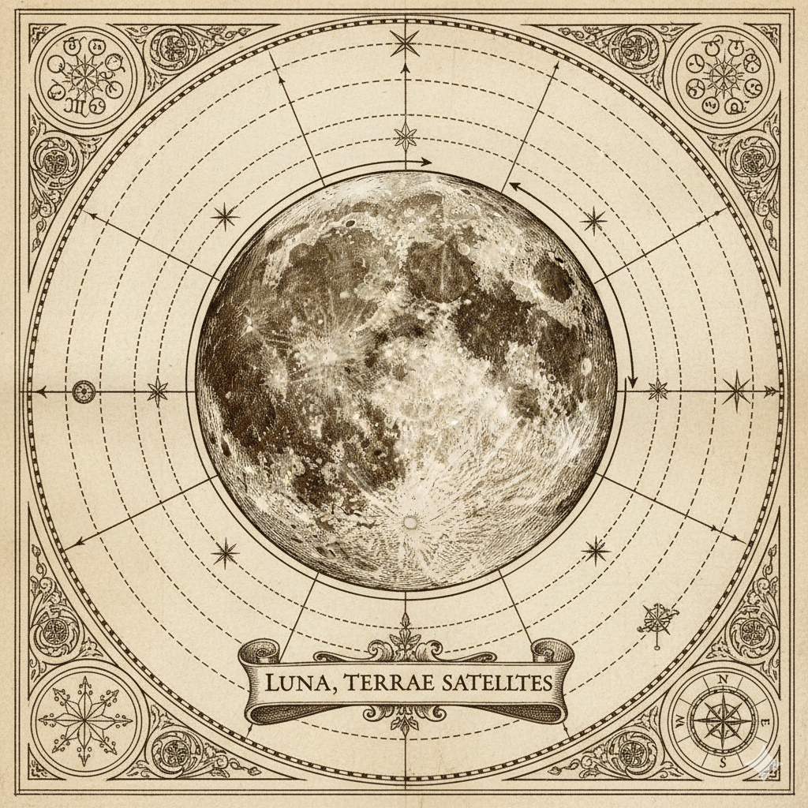

The Moon is slowly drifting away from Earth at approximately 3.8 centimeters per year. This celestial waltz means that in ancient times, our lunar companion appeared much larger in the night sky, and the days were considerably shorter than our modern 24-hour cycle.
Through the phenomena known as tidal locking, the Moon always presents the same face to Earth. This synchronized rotation means the far side of the Moon remained a mystery to humanity until the space age, earning it the poetic moniker of "the dark side," though it receives equal sunlight.
The Moon's gravitational influence creates our ocean tides and has been instrumental in stabilizing Earth's axial tilt. Without our lunar guardian, Earth's tilt could vary wildly, causing dramatic climate shifts that would make life as we know it nearly impossible.